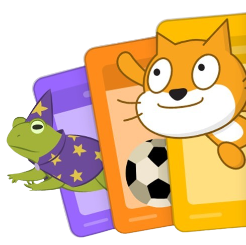

SCRATCH - APRENDA A PROGRAMAR COM BLOCOS!

O Scratch é uma plataforma gratuita de programação visual desenvolvida pelo MIT. Ideal para crianças e iniciantes, permite criar histórias, jogos e animações de forma intuitiva e divertida. Com o Scratch, você desenvolve habilidades de lógica, criatividade e resolução de problemas enquanto compartilha suas criações com uma comunidade global.
